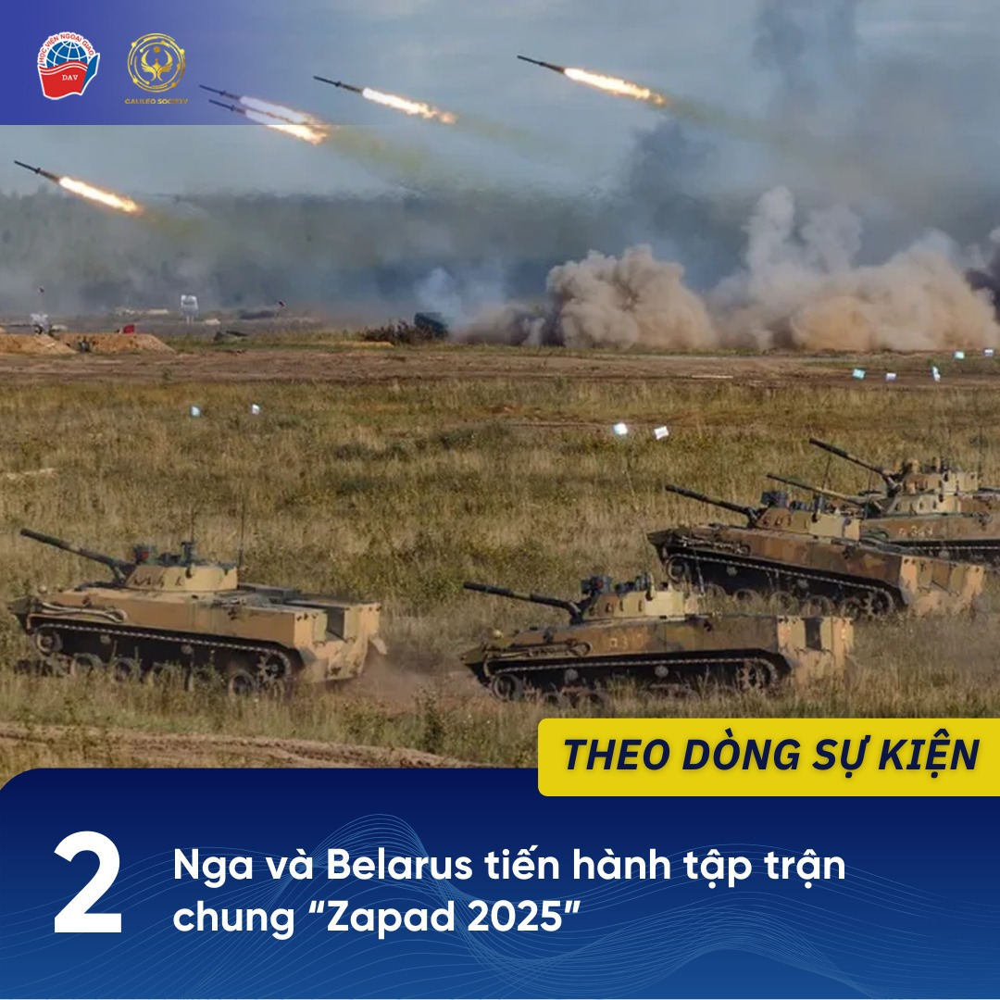
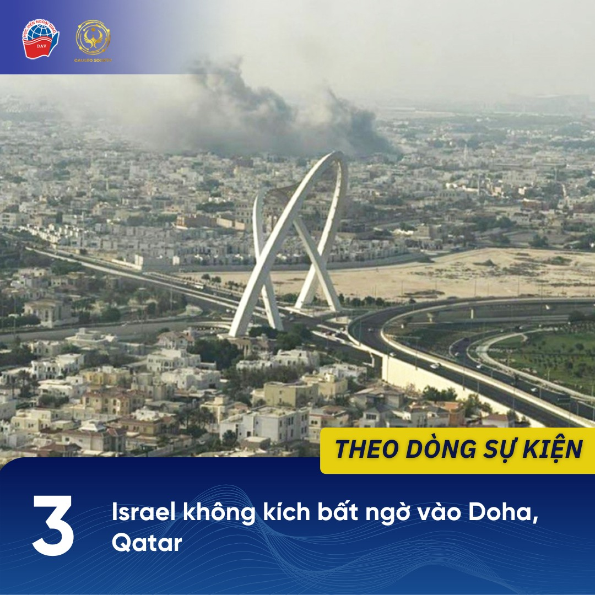
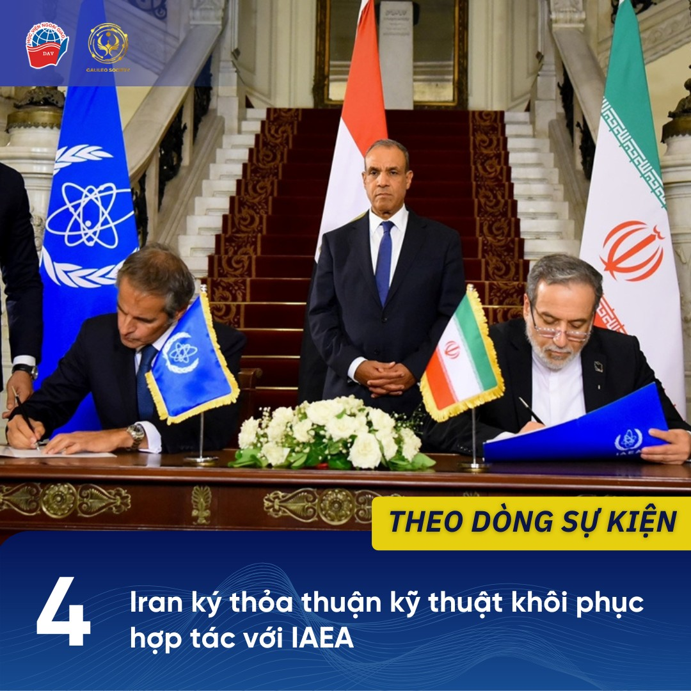

1 Đại hội đồng Liên hợp quốc thông qua Tuyên bố New York về giải pháp hai Nhà nước
Ngày 12/09, Đại hội đồng Liên hợp quốc Khóa 80 đã chính thức thông qua Tuyên bố New York về Giải quyết hòa bình vấn đề Palestine và thực hiện giải pháp hai nhà nước đối với hòa bình Trung Đông. Bản Tuyên bố là kết quả của hội nghị quốc tế được đồng chủ trì bởi Pháp và Ả Rập Xê Út tại trụ sở của Liên hợp quốc vào cuối tháng Bảy vừa qua.
Nội dung của Tuyên bố bao gồm lệnh ngừng bắn ngay lập tức ở Gaza, thả tất cả con tin bị giam giữ ở đó và thành lập một Nhà nước Palestine có cả “thực quyền” và “chủ quyền”. Tuyên bố đồng thời kêu gọi giải giáp và loại trừ khả năng cầm quyền Gaza của Hamas, bình thường hóa quan hệ giữa Israel với các nước Ả Rập cùng các đảm bảo an ninh trong khu vực. Nghị quyết thông qua tuyên bố đã được chấp thuận với 142 phiếu thuận (bao gồm cả Việt Nam), 10 phiếu chống và 12 phiếu trắng. Đại sứ, Đại diện thường trực của Pháp tại Liên hợp quốc Jérôme Bonnafont tái khẳng định “Tuyên bố New York đặt ra một lộ trình duy nhất để thực hiện giải pháp hai nhà nước”.
Tuyên bố New York cho thấy ý chí mạnh mẽ của cộng đồng quốc tế trong việc thúc đẩy hòa bình tại Trung Đông và giải pháp hai nhà nước đối với giải quyết vấn đề xung đột Israel - Palestine. Tổng Thư ký Liên hợp quốc António Guterres nhận định: “Vấn đề cốt lõi của tiến trình hòa bình Trung Đông là việc thực hiện giải pháp hai nhà nước, theo đó hai quốc gia độc lập, có chủ quyền và dân chủ, Israel và Palestine, cùng chung sống bên cạnh nhau trong hòa bình và an ninh”.
Tài liệu tham khảo
[1] Hạnh Chi. Báo Sài Gòn Giải Phóng. Đại hội đồng LHQ thông qua Tuyên bố New York về giải pháp hai nhà nước ở Trung Đông. Ngày 13/09/2025. Truy cập ngày 16/09/2025. https://www.sggp.org.vn/dai-hoi-dong-lhq-thong-qua-tuyen...
[2] Reuters. UN overwhelmingly endorses two-state solution declaration that condemns Hamas. Ngày 12/09/2025. Truy cập ngày 16/09/2025. https://www.reuters.com/.../un-overwhelmingly-endorses.../
2 Nga và Belarus tiến hành tập trận chung “Zapad-2025”
Ngày 12/09, Nga và Belarus đã bắt đầu tiến hành tập trận chiến lược quân sự chung trong khuôn khổ chương trình “Zapad-2025” kéo dài đến ngày 16/09 tại nhiều căn cứ của cả hai nước, bao gồm cả vùng Kaliningrad. Đây là cuộc tập trận đầu tiên giữa hai nước kể từ xung đột Nga - Ukraine nổ ra vào năm 2022 và trong thời điểm nhạy cảm sau sự kiện Ba Lan tố cáo Nga sử dụng máy bay không người lái xâm nhập vào lãnh thổ của nước này vào ngày 10/9. Theo Bộ Quốc phòng của hai nước, cuộc tập trận nhằm kiểm tra khả năng của hai nước trong việc đẩy lùi các cuộc tấn công từ bên ngoài, giành lại lãnh thổ đã mất và bảo vệ biên giới.
Các quan chức Belarus cho biết cuộc tập trận này mang tính phòng thủ và được giới hạn trong khu vực phía đông Belarus tiếp giáp với Nga. Ước tính có khoảng 13.000 quân tham gia cuộc tập trận, ít hơn đáng kể so với con số 200.000 quân tham gia “Zapad-2021”. Cuộc tập trận sẽ diễn ra theo hai giai đoạn: giai đoạn đầu tập trung vào phòng thủ và phối hợp; giai đoạn hai tập trung vào giành lại lãnh thổ và đánh bại lực lượng đối phương.
Nga cho biết họ đã mời các quan sát viên từ các khối quốc phòng và kinh tế do nước này và Trung Quốc đứng đầu. Ngày 11/09, Người phát ngôn Điện Kremlin Dmitri Peskov phát biểu với các phóng viên rằng cuộc tập trận “Zapad-2025” đã được lên kế hoạch trước và không nhằm vào "bất kỳ quốc gia thứ ba nào". Dù vậy, cuộc tập trận chung giữa Nga và Belarus không chỉ được xem là hoạt động quân sự thường kỳ, mà còn phản ánh thông điệp răn đe và phô diễn sức mạnh của Nga - Belarus trong bối cảnh an ninh châu Âu đang hết sức căng thẳng.
Tài liệu tham khảo
[1] The Moscow Times. Russia and Belarus begin Zapad-2025 military exercises. Ngày 12/09/2025. Truy cập ngày 13/09/2025. https://www.themoscowtimes.com/.../russia-and-belarus...
[2] Trevelyan, M. Russia and Belarus start military exercise near NATO border after drone incursion. Reuters. Ngày 12/09/2025. Truy cập ngày 13/09/2025. https://www.reuters.com/.../russia-belarus-start.../
3 Israel không kích bất ngờ vào Doha, Qatar
Ngày 09/09, Israel tiến hành một cuộc không kích bất ngờ vào thủ đô Doha (Qatar) nhắm vào nhóm lãnh đạo Hamas đang có mặt tại đây. Vụ tấn công đã làm gia tăng căng thẳng trong khu vực khi Israel tiến hành mở rộng phạm vi tấn công ra ngoài lãnh thổ Palestine và các nước láng giềng trực tiếp. Hamas cho biết năm thành viên của tổ chức đã thiệt mạng trong cuộc tấn công, bao gồm con trai của thủ lĩnh Hamas lưu vong tại Gaza kiêm nhà đàm phán hàng đầu Khalil al-Hayya.
Tổng thống Mỹ Donald Trump tuyên bố ông “rất không hài lòng” với động thái này. Thủ tướng Qatar Sheikh Mohammed bin Abdulrahman al-Thani nhận định cuộc không kích đe dọa đang làm chệch hướng các cuộc đàm phán hòa bình mà Qatar đang đóng vai trò là trung gian giữa Hamas và Israel. Các quốc gia Trung Đông bao gồm Ả Rập Xê Út, Ai Cập, Các Tiểu vương quốc Ả Rập Thống nhất và Liên minh Châu Âu đồng thời lên án mạnh mẽ.
Giới quan sát bao gồm nhiều nhà phân tích, tiêu biểu như Giáo sư Đại học Qatar Ali Bakir, Chánh Văn phòng của Trung tâm Nghiên cứu Chiến lược và Quốc tế (CSIC) Will Todman nhận định rằng vụ tấn công đã làm suy giảm lòng tin của nhiều quốc gia trong khu vực đối với vai trò bảo đảm an ninh của Mỹ, khiến cho các nỗ lực đàm phán ngừng bắn và hòa giải quốc tế kéo dài gần hai năm qua có thể đi vào bế tắc. Cuộc không kích tại Doha cho thấy sự thay đổi chiến thuật của Israel trong việc truy quét Hamas, nhưng cũng đồng thời đẩy nguy cơ xung đột vượt ra ngoài biên giới tại khu vực Trung Đông.
Tài liệu tham khảo
[1] The Guardian. William Christou. Israel’s strike on Hamas leaders in Qatar shatters Gulf’s faith in US protection. Ngày 12/09/2025. Truy cập ngày 16/09/2025. https://www.theguardian.com/.../israels-strike-on-hamas.../
[2] Andrew Mills, Jana Choukeir, Ahmed Elimam, Jeff Mason. Israel attacks Hamas leaders in Qatar, Trump says he’s very unhappy about strike. Reuters. Ngày 09/09/2025. Truy cập ngày 16/09/2025. https://www.reuters.com/.../israel-attacks-hamas-leaders.../
[3] Agnes Helou. Israeli strike in Qatar jeopardizes normalization in the region: Experts. Ngày 10/09/2025. Truy cập ngày 16/09/2025. https://breakingdefense.com/.../israeli-strike-in-qatar.../
4 Iran ký thỏa thuận kỹ thuật khôi phục hợp tác với IAEA
Ngày 09/09, Iran đã ký thỏa thuận kỹ thuật với Cơ quan Năng lượng Nguyên tử Quốc tế (IAEA) để tạo điều kiện cho việc khôi phục hợp tác, bao gồm cả những biện pháp tái khởi động thanh tra các cơ quan chế tạo hạt nhân tại Iran. Thỏa thuận được công bố sau cuộc họp giữa Bộ trưởng Ngoại giao Ai Cập Badr Abdelatty, Bộ trưởng Ngoại giao Iran Abbas Araghchi và Tổng Giám đốc IAEA Rafael Grossi tại Cairo (Ai Cập).
Các bên không công khai chi tiết về nội dung trong thỏa thuận, song Tổng Giám đốc Grossi chia sẻ trong một buổi họp báo sau hội nghị rằng cam kết này mang tính chất kỹ thuật và nhấn mạnh việc khôi phục thanh tra tại Iran. Tổng thống Ai Cập Abdel-Fattah el-Sissi nhấn mạnh vai trò của IAEA trong việc hỗ trợ các điều khoản không phổ biến vũ khí hạt nhân. Bộ Ngoại giao Ai Cập cho biết sự đồng thuận này là kết quả của những nỗ lực ngoại giao “mạnh mẽ” của nước này. Ngoại trưởng Iran Araghchi chia sẻ với các phóng viên thỏa thuận này đã giải quyết nhiều mối quan ngại và thách thức an ninh đối với nước này, đồng thời đặt ra các yêu cầu kỹ thuật cho việc hợp tác với IAEA.
Tài liệu tham khảo
[1] Fatma Khaled, Stephanie Liechtenstein. Agreement signed between Iran and nuclear watchdog agency seeking ways to restart cooperation. AP News. Ngày 09/09/2025. Truy cập ngày 15/09/2025. https://apnews.com/.../iran-nuclear-capabilities-iaea...
[2] NPR. Iran-IAEA cooperation agreement: Egypt’s role. Ngày 09/09/2025. Truy cập ngày 15/09/2025. https://www.npr.org/2025/09/09/g-s1-87860/